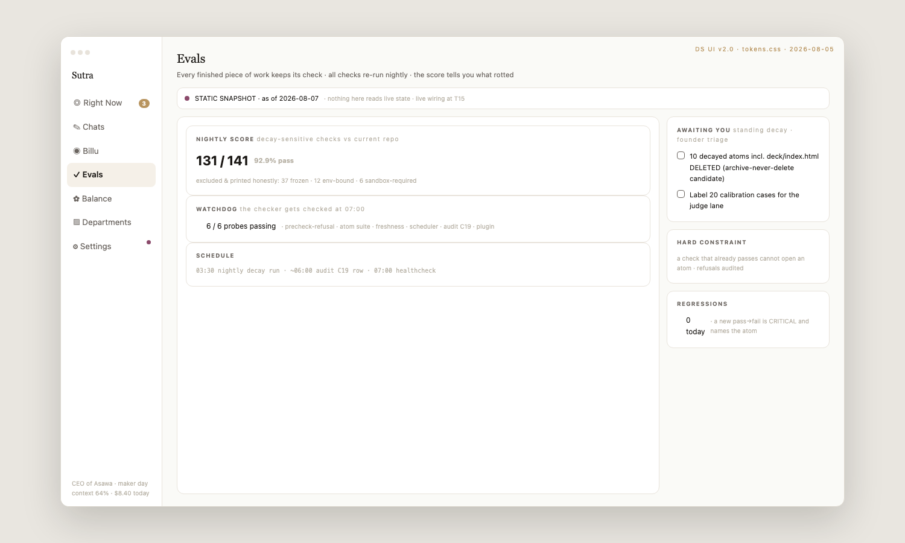

The whole industry has quietly agreed on the same diagnosis: an AI without a governed picture of your business will confidently make things up about your business. That diagnosis is not our insight — it is now the sales pitch of enterprise software’s biggest categories. Where everyone differs is the treatment.
| Category | What it does about the problem | What it does not do |
|---|---|---|
| Systems of record (ERP, CRM) | Hold the authoritative data | Do not know how work is done — the process lives outside them |
| Process mining | Watch your systems and reconstruct how work actually flows | Observe and score the process; do not run it, and do not check themselves |
| Ontology / AI operating layers | Build a mirror of the business so the AI stops hallucinating about it | The mirror describes work; the work still happens elsewhere |
| Workflow automation | Execute predefined flows | No model of the company around the flow — no notion of who owns what, or whether done was really done |
| Copilots / chat assistants | Produce output on demand | Remember nothing structural; every session re-explains the company |
The difference is easiest to see on one concrete job. Take a monthly payment reconciliation:
| A mirror of the business | Native | |
|---|---|---|
| What exists | A record that reconciliation happens, who does it, which systems it touches | The reconciliation itself, written as steps with a declared “done means this” check |
| When it runs | Somewhere else — a person, a script, a vendor tool | Through the written form; every run recorded |
| When something is off | The mirror finds out later, if the data flows back | The check fails, work stops, the owner is asked — with the evidence attached |
| Who audits it | A person, occasionally | The system re-tests its own playbooks on a schedule; a playbook that stops passing loses its standing |

Self-checking as a screen, not a promise: the app’s own Evals tab — nightly score with honest exclusions, watchdog probes, and a rule that a check which already passes cannot claim new work.
We tell the future as five chapters with proofs, not dates — a company’s recurring work running written and checked; then measurably improving; then departments trading work without human brokers; then whole efforts running reconstructably; then the system installing anywhere and growing on a stranger’s own record. The full story, with what’s proven so far and what each next step requires, is the Roadmap. How that spreads between companies — playbooks travel, your business never does — is Distribution.
If the thesis holds, the interesting consequence is not bigger companies doing more. It is small companies being properly run — the structure that used to require a floor of managers becoming something one person supervises. We run that experiment on ourselves daily: one operator, six companies’ operations. A load test, not a customer count — but it is the future this page bets on, at the smallest scale that can be tested.
Authored 2026-08-18 for the front door (founder direction: industry fit + future, plain voice). Sources: world-model research 2026-08-10 (fenced as research; categories-first per codex), VERSIONS.md ladder, story-spine 2026-08-18. Reviewed against 6 codex objections (categories over names, one concrete example, bounded counter with counter-counter).